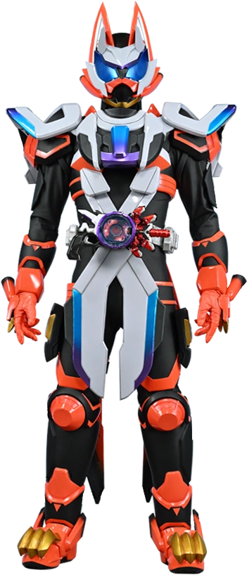

Laser Boost Form
"Laser Boost! Ready? Fight!"
Sơ lược hình thái
Hình thái được kích hoạt khi Ukiyo Ace kết hợp Boost Mark II Raise Buckle cùng với súng Laser Raise Riser được viện trợ từ người ủng hộ Ziin. Sự kết hợp này giúp khắc phục hoàn toàn tác dụng phụ buồn ngủ của Mark II, tạo nên một chiến binh hoàn hảo về cả tốc độ lẫn sức mạnh.
Thông tin chính
- Thiết bị: Desire Driver, Boost Mark II Raise Buckle & Laser Raise Riser
- Sức mạnh: Tốc độ cực hạn (hyper-speed) và thao túng trọng lượng.
- Đặc điểm: Có khả năng di chuyển với tốc độ vượt xa tầm nhìn, bay lượn và thay đổi quỹ đạo trên không trung một cách linh hoạt bằng thiết bị điều khiển trọng lực.